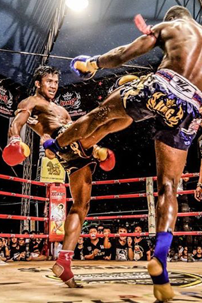

Actualmente el Muay Thay se practica a nivel mundial y es uno de los deportes de contacto con mayor difusión. Aun hoy, los mejores campos de entrenamiento o Khai Muay siguen estando en Tailandia. Uno de los paises que mejor cantera disponen de luchadores Muay Thay son los Países Bajos.
Muay Boran, traducido como “Boxeo Ancestral”, es el predecesor del Muay Thai. Su edad lo hace muy difícil de rastrear a través de la historia. Evidencias arqueológicas sugieren que un arte marcial similar al Muay Boran ha sido practicado en países del Sudeste Asiático desde hace unos 2.000 años. La creación y el entrenamiento en este arte fue probablemente desarrollado para propósitos militares antiguos. Las peleas que utilizaban este estilo se hicieron muy populares; tales luchas se hicieron conocidas como Dhoi Muay, un término ahora usado para boxeo y pugilismo en general.
l Muay Thai en la actualidad se practica como un deporte en muchos países del mundo. Su difusión global le ha convertido en uno de los deportes de contacto más extendidos y su número de practicantes no para de crecer. Los mejores Khai Muay (campos de entrenamiento) están en Tailandia, pero actualmente otros países pueden competir en igualdad de condiciones, sobre todo en las categorías de peso más altas. Los Países Bajos son cuna de muchos luchadores famosos como Ernesto Hoost, Peter Aerts o el legendario Ramon Dekkers (8 veces campeón del mundo) y muchos más que se enfrentaron con tailandeses en su propio país y con reglas completas de Muay Thai. Una leyenda en Tailandia es el campeón Buakaw Por Pramuk un luchador muy característico por su rapidez y por sus piernas, de él dicen que su patada es peor que la “coz de un caballo”.
Es un ritual realizado por los nak muay, los practicantes de muay thai, antes de luchar. Conocido por diferentes nombres, también existe en muay Lao de Laos, en el prodal de Camboya, y en el tomoi de Malasia. Consiste en dos partes: el wai khru y el ram muay. El wai es un saludo tailandés tradicional con las palmas juntas como una señal de respeto. Khru es la forma tailandesa de la palabra sánscrita gurú que significa maestro. Ram es la palabra tailandesa para bailar en estilo clásico, y muay significa boxeo o arte marcial. Por lo tanto, el término completo puede traducirse como "baile de guerra que saluda al maestro"
El Muay Thai puede brindar beneficios psicológicos a los niños como muchos otros deportes, si el chaval se divierte, y aprende, cogerá confianza y desarrollará autoestima y bienestar con su propio cuerpo. En una edad en la que el bienestar con uno mismo es un bien muy preciado y se vuelve determinante para su futuro adulto.
Puños Libertarios
Contactanos